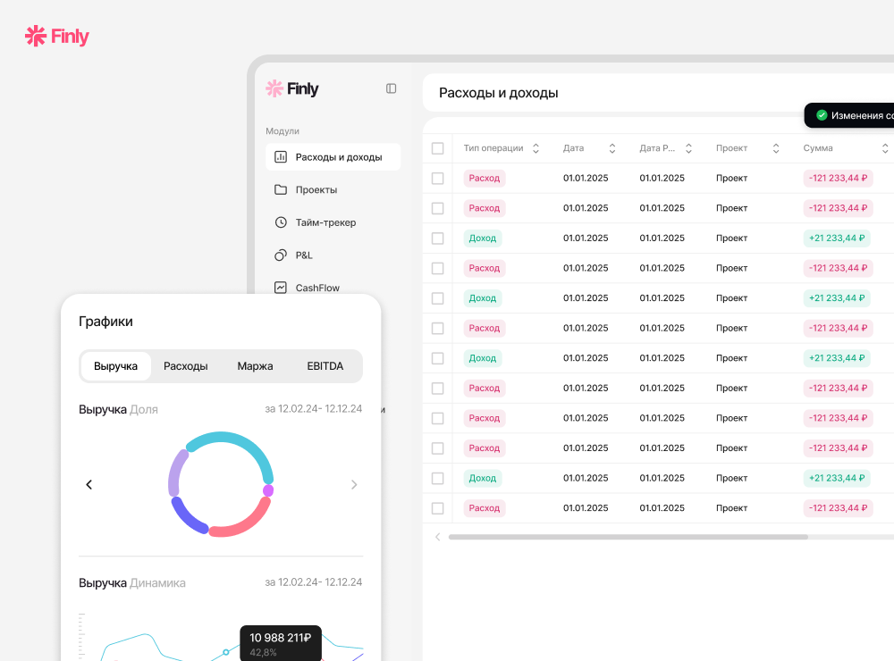
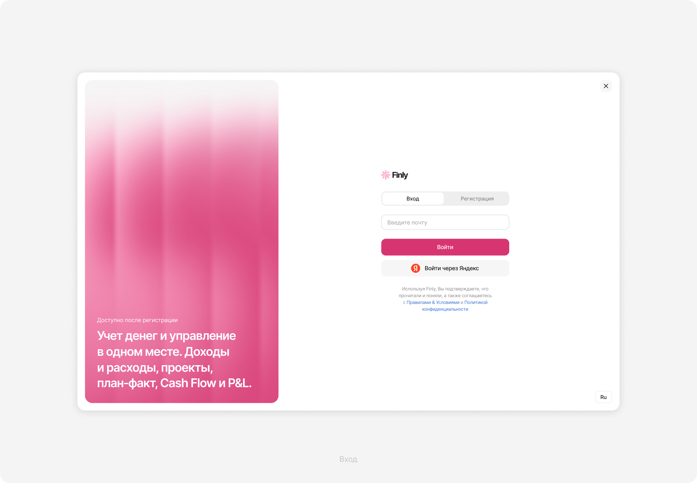
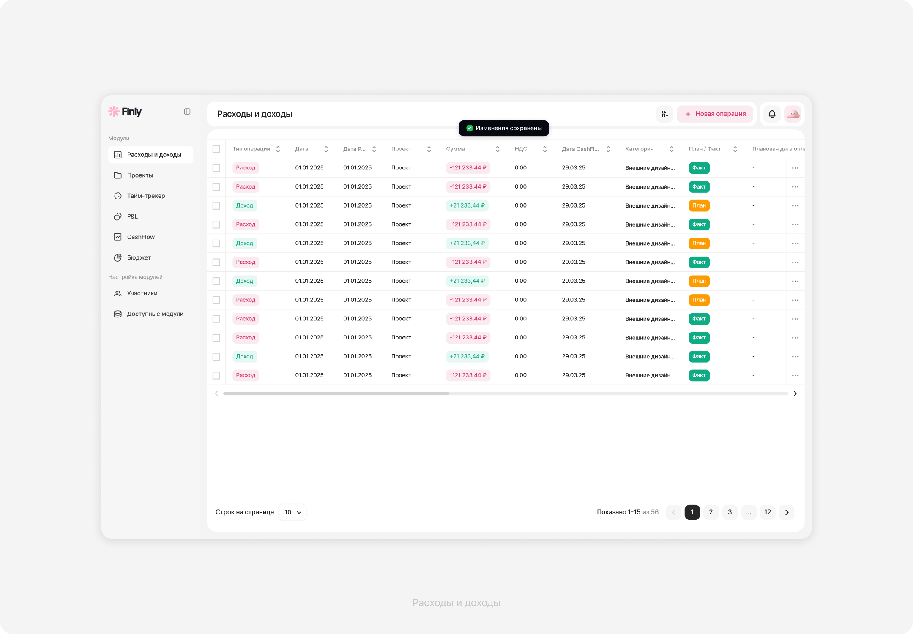
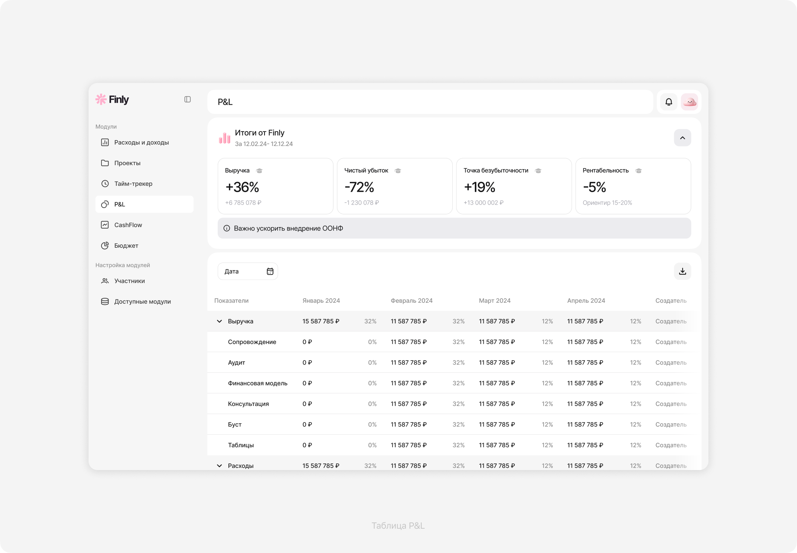
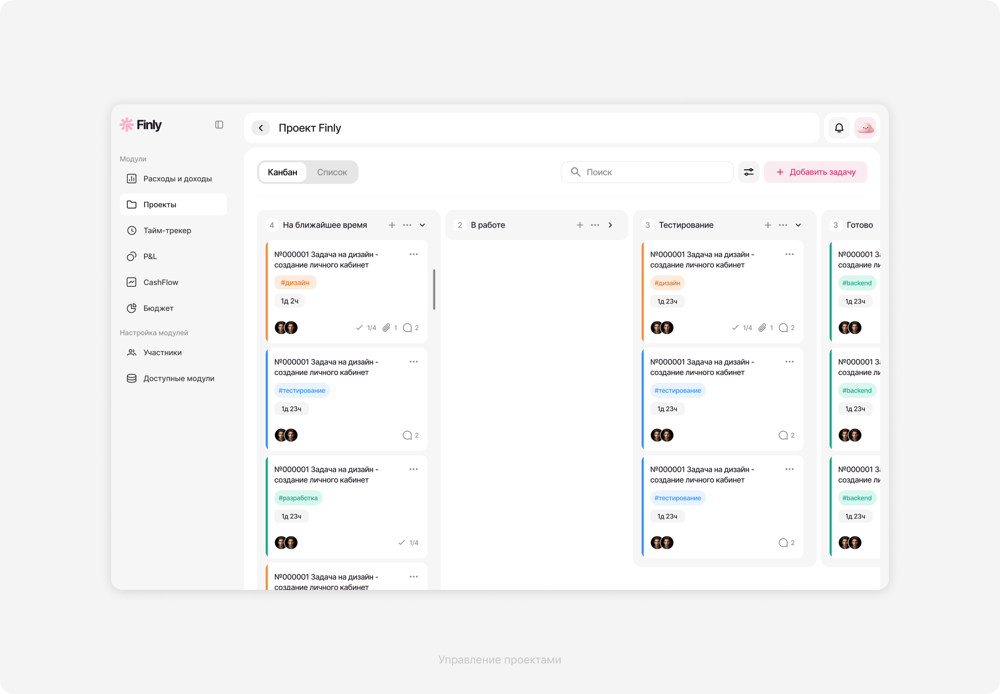

Веб интерфейс для учета денег и управления
CRM-система, ориентированная на финансовый учет для менеджеров, бухгалтеров и руководителей.

Проблема
Многие компании ведут финансовую отчетность в Excel или с помощью разных сервисов, что приводит к путанице и затрудняет принятие решений.
Гипотеза
Мы предположили, что если объединить ключевые финансовые операции и аналитику в одном интерфейсе, а данные представить через понятные таблицы, статусы и визуализации, пользователи смогут быстрее контролировать состояние бизнеса и принимать решения без необходимости собирать информацию вручную из нескольких источников.
Решение
Чтобы упростить работу с финансовыми данными, я спроектировал систему вокруг основных ежедневных сценариев пользователя, а не вокруг бухгалтерской терминологии.
Ключевым решением стало объединение финансовых операций, проектов и аналитики в одном интерфейсе.
Вместо работы с несколькими таблицами и сервисами пользователь получает единое пространство.



